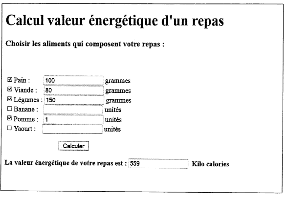

Dossier4:(6pts)
On veut réaliser une page Web statique contenant un formulaire permettant de calculer la valeur
énergétique d'un repas en kilo calorie. L'utilisateur sélectionne, dans des cases à cocher, les
aliments qui composent le repas avec les quantités, puis clique sur le bouton < Calculer) pour
afficher le total des calories du repas sachant que
- 100 grammes de pain donne 2TSkilo calories
- 100 grammes de viandes donne 180 kilo calories
- 100 grammes de légumes donne 40 kilo calories
- 1 fruit de banane donne 116 kilo calories
- 1 fruit de pomme donne 80 kilo calories
- 1 yaourt donne 140 kilo calories

- Ecrire le code HTML de cene page. (2 pts)
- Ecrire le code |avaScript ou jQuery associé au bouton << Calculer >> ; tenir compte de la
validation suivante : Au moins une case à cocher doit être sélectionnée sinon afficher un
message d'erreur. (a pts)